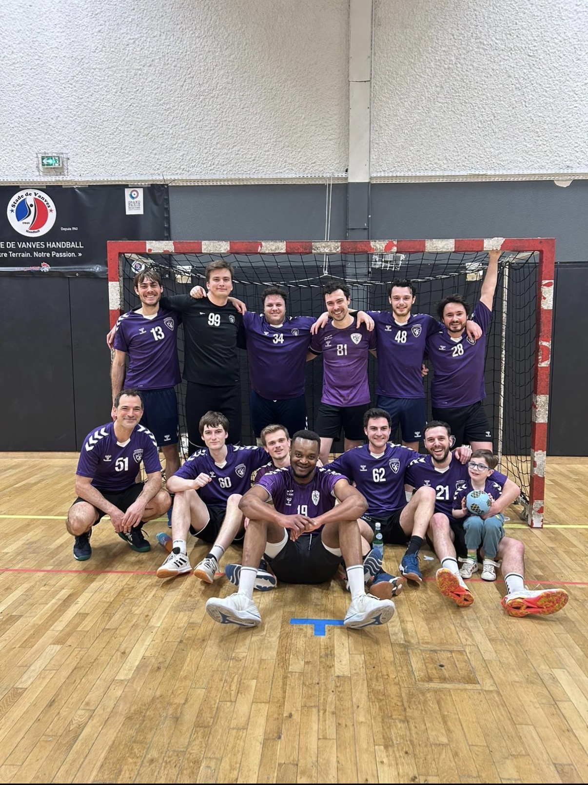

Un profil atypique
Découvrez comment je connecte les bases du management, mes expériences de terrain et mes soft skills.
Voir plusÉtudiant en BUT GEA. À l'intersection du Management, des Ressources Humaines et de la finance.

Actuellement en première année de BUT Gestion des Entreprises et des Administrations à l'IUT de Sceaux (Paris-Saclay). Je me forme aux bases essentielles du management : RH, comptabilité, contrôle de gestion et marketing.
Mon profil est hybride : je tire ma rigueur et mon leadership de mes expériences dans l'animation, tout en nourrissant une veille active et passionnée pour les nouvelles technologies.
Forgées sur le terrain
Automatisation et nouvelles technologies.
Sport : Handball (PUC), musculation.
Culture : Passionné par le Japon.
Au-delà de la théorie, mon année d'expérience en gestion de groupes m'a appris l'importance de l'adaptabilité, de la rigueur logistique et de la communication. Je recherche un environnement stimulant pour mettre cette énergie au service de projets concrets.

Missions managériales : Conception et organisation d'activités, gestion de veillées, collaboration en équipe.
Intégration et apprentissage des techniques d'animation en équipe professionnelle.
Immersion en établissement public, accueil et rangement.
Bases du management, RH, comptabilité, finance, fiscalité.
Spécialisation : Grands jeux et journées à thème.
Spécialité Gestion Finance. Mention Bien.
Découvrez comment je connecte les bases du management, mes expériences de terrain et mes soft skills.
Voir plus
De l'animation BAFA à la gestion de groupe : ce que le terrain m'a enseigné sur le travail en équipe.
Voir plusPrompt engineering, automatisation et comment j'allège les tâches répétitives grâce à la tech.
Voir plus
Handball au PUC, musculation... Ce que le sport de compétition m'apporte au quotidien.
Voir plusAmélioration continue et rigueur : pourquoi la culture nippone m'inspire professionnellement.
Voir plus
Paris 13e, France |
07 66
28 13 16
theochristmann101@gmail.com |
https://www.linkedin.com/in/theo-christmann-7369063aa